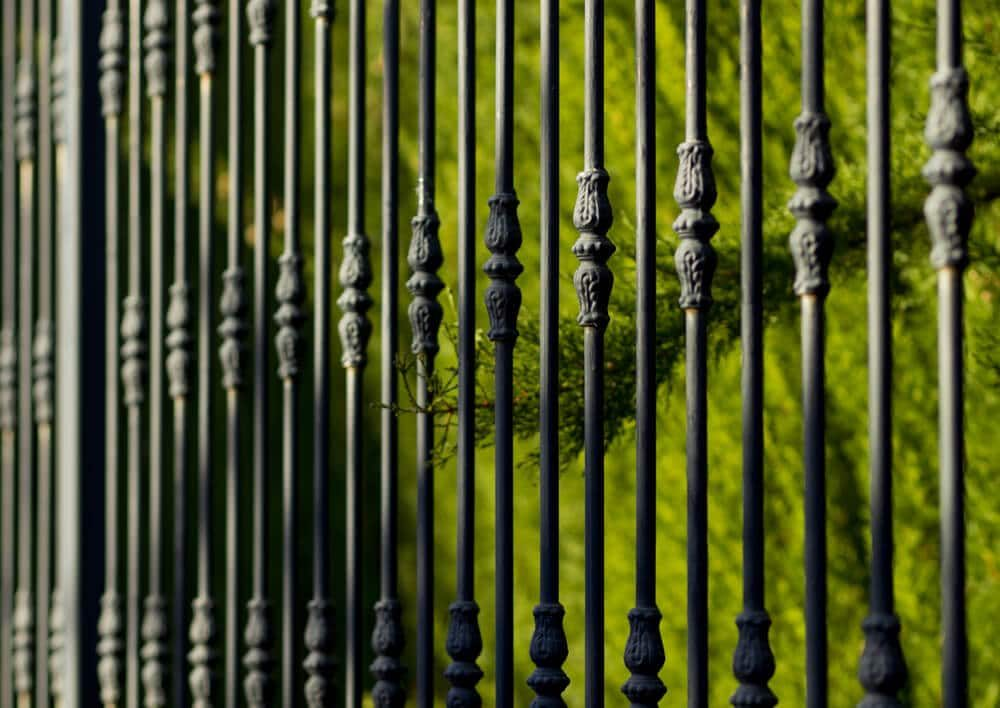
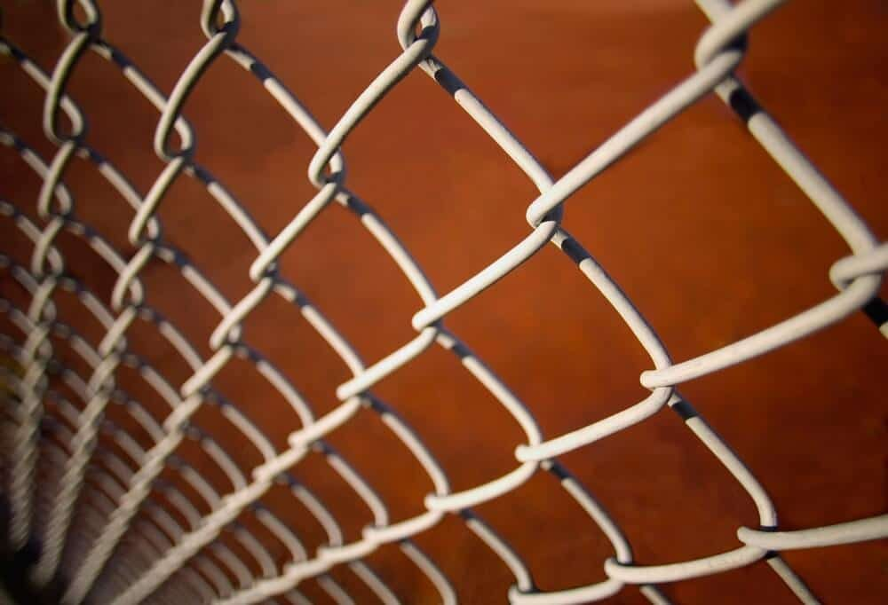

In This Guide
- Aluminum, wood, vinyl, wrought iron, and chain link are the main durable fence choices, and each has different strengths.
- Privacy, security, pets, and kids should drive your choice, since each need points toward a different fence.
- Eight practical tips cover height, materials, upkeep, quotes, local rules, and property lines before you commit.
- The most durable fence is the one whose material matches how you plan to use it.
Fences are not all alike. Homeowners often pick the same handful of materials for safety and looks, but each one behaves differently once it is in the ground. Installation cost, material, and upkeep all change what a fence costs you over time.
The fence you choose shapes the outside of your home as much as its security. This guide from Big Easy Fence covers five durable fence types, how to match them to your needs, and a checklist to use before you buy.
Durable Fence Types Worth Knowing
Each of these materials has earned its place in yards and businesses. Here is how they compare.
Aluminum Fences

An aluminum fence is one of the most common and popular choices. It may not be the toughest option on the list, but it is easy to maintain. Most of your effort goes into picking the color and decoration when it is installed. After that, it asks for very little.
Wood Fences
A wood fence is the image many people have in mind when they think of a fence. It is a popular, affordable privacy fence, and its height gives a real sense of seclusion. Wood brings a warm, country feel at a friendly price. Cost comes down to size and height, plus the amount and type of lumber, so decide on the layout before you ask for a quote.
Wrought Iron Fences
A wrought iron fence gives you detail and durability in one package. It has a reputation for high maintenance, but a rust-resistant coating goes a long way toward changing that. Plan on sanding and repainting roughly every couple of years to keep rust away. It can get expensive, depending on how custom the design is, so set a budget for the design, thickness, and height you want.
Vinyl Fences
Vinyl is a strong pick when price matters, since it is affordable and also quite durable. It is low maintenance, and its smooth surface resists staining, which makes it easy to clean. There are also plenty of colors to choose from. You may hear vinyl called PVC, which is the same material.
Chain Link Fences

Chain link fences are a common sight around schools and parks. They will not give you privacy on their own. If you want something inexpensive and durable, though, they are hard to beat, and they need little maintenance. To add privacy, plant vines or shrubs along the fence.
Matching a Fence to Your Needs
The best fence starts with the job it has to do. Think through these four questions.
Privacy
For full privacy, choose a solid style with no gaps. Wood and vinyl both work, as long as the boards go in without spaces between them. Open styles such as wrought iron or chain link keep the view open unless you add slats or plants.
Security
A secure fence should be tall enough and sturdy enough to be a real barrier, and it should be hard to climb. Check your HOA and local community rules before you build, since height limits and materials may be restricted.
Pet Friendly
Pets are curious and love to roam. A fence about 3 to 4 feet tall is enough for small to medium dogs, and chain link or wood with gaps lets them watch what is going on outside. If yours dig, the fence needs to be anchored deep enough that there is no room to slip under it. For big dogs and growing pets, go taller. Our post on the best dog fences for every breed covers this in more detail.
Kid Safe
With children, a fence has to be reliable. It should keep kids in the yard and keep unwanted visitors out. If you have a pool, remember that pool fences have their own local safety requirements, so check them before choosing a style.
Eight Tips for Choosing a Fence
- Decide on height and material. Think about how tall the fence needs to be and which materials can reach that height.
- Compare prices. Look at what different companies charge before choosing one.
- Ask about warranties. If a company offers one, find out exactly what it covers.
- Get at least three quotes. Side-by-side numbers make it easier to spot a fair price.
- Check local rules. Look up local building codes and permit needs before you install.
- Think about upkeep. Be honest about how much maintenance you want to do down the road.
- Choose a credible contractor. Look for a professional crew with good materials on hand.
- Confirm your property line. Make sure the fence goes in the right place before any digging starts.
For a broader look at materials and styles, see our guide to the best fence types for your home.
Choosing a Fence That Lasts
Durable is not the same for every fence. It depends on the material and on how you will use it. When you are ready to compare options for your own yard, a fence company can walk the property with you, and a free estimate will show what each material costs.
Need Help Choosing a Durable Fence?
Tell us how you plan to use your fence, and we will help you compare durable options that fit your property and budget.